1 · Principles of Laboratory Diagnostics
Instructional Objectives
Topic Outline 1: Principles of Laboratory Diagnostics
- Define the importance and role of laboratory testing in the evaluation of a patient.
- Discuss the importance of patient counseling for diagnostic testing to reduce medical errors.
- Describe the phases of the diagnostic testing process: pretest phase, intratest phase, posttest phase.
- Explain the components of the: pretest phase, intratest phase, posttest phase.
- Identify which colored laboratory collection tubes correspond to common laboratory tests.
- Define the purpose and appropriate use of: stool studies, throat cultures, sputum cultures, blood cultures.
- Define point-of-care (POC) testing.
- Discuss common point-of-care tests performed in primary care and acute care settings.
- Compare and contrast qualitative and quantitative diagnostic tests.
- Discuss the availability, advantages, and limitations of point-of-care testing.
- Describe quality assurance measures necessary for point-of-care testing.
- Discuss accreditation and regulatory considerations related to point-of-care testing.
- Define sensitivity, specificity, positive predictive value, and negative predictive value.
- Differentiate between screening tests and diagnostic tests.
- Explain the concepts of pretest probability and posttest probability.
Professor Reynolds answered “what are the exams going to be like?” in the first three minutes of Lecture 1. Four things follow from it, and they shape this whole guide:
| She said | What it means for you |
|---|---|
| “We always also give you the normal ranges … I’m not going to just throw a random number at you and not give you context of whether that’s high or low.” | Do not memorise reference values. If a lab value appears in a stem, its range appears with it — on this exam and, she said, in every class. Spend the effort on what the value means. |
| “It will be based on the instructional objectives … more related to the tests themselves rather than maybe the specific diagnosis.” | Study the test: what to order, why, its limits, how to read it. The objectives above are the blueprint. |
| “Although a heart rhythm can be a diagnosis, you also need to be able to interpret an EKG by naming the rhythm.” | The one stated exception. It lands on Lectures 7 and 11–16, so Exams 2 and 3. |
| “There could be pictures … images of x-rays or CT scans … in addition to the vignette.” | Expect image-based vignettes, not only text. |
Her question style, in her own words: “which of the following laboratory tests would be best to evaluate a patient with microscopic anemia?” · “what would be the next test that you would order?”
1.1 · Objectives a & b — The role of testing, and counseling the patient
Diagnostics are tools to gain additional information, used in conjunction with a thorough history and physical examination — not in place of them. They are not necessarily therapeutic, though a blood culture that returns sensitivities certainly can be.
| What testing does |
|---|
| Confirms a diagnosis · informs health status · evaluates disease severity · directs treatment · monitors response to therapy · guides ongoing care through regular screening |
Counseling is framed as error reduction, not courtesy. Patients who are informed and understand the plan are more likely to be compliant, and compliance is what makes the result meaningful. Education covers the testing process, their questions, and the anticipated timeline for results.
| Effective diagnostic testing |
|---|
| Communicate clearly · consider ethnicity, culture, gender and age · prepare the patient properly · follow standards · measure and evaluate outcomes · manage services with a team approach · interpret, treat, monitor and counsel on abnormal outcomes · maintain proper records |
1.2 · Objectives c & d — The three phases
Each phase has its own guidelines and standards, and each has its own characteristic failures.
| Phase | Also called | Span |
|---|---|---|
| Pretest | Preanalytical | Begins with patient preparation, extends until the test begins |
| Intratest | Analytical | Performing the test and everything it encompasses |
| Posttest | Postanalytical | Begins once the test is complete; focuses on aftercare |
| Pretest — what to consider | Pretest — how it fails |
|---|---|
| Review history and risk assessment · identify contraindications · assess coping styles, fears and phobias · observe universal precautions · document relevant data · cost and reimbursement · patient and family education · documentation · ethical and legal considerations, including consent | Communication errors · medication administration as directed · proper labeling · technical errors — inadequate blood in the vacuum tube, delay in transport, inappropriate preparation and storage · inappropriate patient preparation — fasting |
Variables that can affect results: patient preparation · current drug therapy · time of specimen collection · physical activity · hydration status · age · sex · body mass index.
| Intratest | Posttest |
|---|---|
| Specimen or tissue collection · monitoring the testing environment · performing or assisting the procedure · providing emotional and physical comfort · administering analgesics and sedatives · monitoring vital signs · universal precautions · proper collection · minimizing delays · monitoring for side effects or complications | Monitor for complications — bleeding, infection, respiratory difficulties, perforation, adverse effects of sedation or anesthesia · interpret results and the patient's response · identify and treat critical values · communicate results clearly and sensitively |
1.3 · Objective e — Collection tubes and the order of draw
The deck carries a two-dozen-row table pairing every additive to every stopper colour. She does not want it memorised. “The thing I want you to know better, have a better handle on, is kind of the order and sort of the broad category — so light blue, think coags; lavender, we’re gonna be using this for like our CBC.” Then: “the order is important. I kind of want you to have an idea of the order.”
Her test of whether you know it: if you ordered coagulation studies and someone walks in with a lavender tube, you should immediately know that is the wrong tube.

| Order | Tube | Contents | Think |
|---|---|---|---|
| 1 | Yellow | Sterile media | Blood cultures |
| 2 | Light blue | Sodium citrate | Coagulation studies |
| 3 | Red | Non-additive serum tube | Serum chemistry |
| 4 | Gold / tiger | Serum separator | Serum chemistry |
| 5 | Green | Heparin | Plasma chemistry |
| 6 | Lavender | Ethylenediaminetetraacetic acid | Complete blood count |
| 7 | Gray | Glycolytic inhibitor | Glucose |
1.4 · Objective f — Stool, blood, sputum and throat studies
| Study | Purpose and use | The detail that gets tested |
|---|---|---|
| Stool studies | Non-invasive; diagnostic or screening. Indications: diarrhea, excessive flatus, abdominal discomfort, change in stool colour, recent travel, well water, prolonged antibiotics. Identifies overgrowth of normal flora, toxins, acquired bacteria, parasites | Specimen must be uncontaminated with urine or other secretions, in a dry clean container |
| Ova & parasites | Part of stool studies | Do NOT refrigerate — warm stool is best. Three separate random specimens, because of the parasite life cycle |
| Guaiac | Detects fecal occult blood; from a specimen or from the gloved finger after digital rectal examination | Heme oxidises the hydrogen peroxide in the guaiac → blue = positive. Use a small sample; a large one obscures the result |
| Blood cultures | Acute febrile illness with suspicion of septicemia. Both diagnostic and therapeutic — identifies the pathogen and gives sensitivities | Two separate samples from opposite arms, ideally before antibiotics. Aerobic first. Scrub and let dry; do not palpate after disinfection unless wearing sterile gloves |
| Sputum culture | Identifies respiratory pathogens and directs treatment | Two steps: Gram stain first (positive versus negative), then culture for identification and sensitivities. Sit upright, rinse mouth with water, three deep breaths, deep cough. Aerosols may assist. Acid-fast bacilli can be done from the same specimen |
| Throat culture | Isolates the pathogen, often streptococci, because of beta-hemolytic streptococcal pharyngitis. Most common ages 3–15; in adults, severe or recurrent sore throat, fever, palpable lymphadenopathy | Tongue blade improves visualization, relaxes the throat and reduces gag. Rotate the swab over the posterior throat, both tonsils, and any inflammation, exudate or ulceration. Avoid the tongue and lips. Rapid immunologic tests are highly accurate |
1.5 · Objectives g, h & j — Point-of-care testing
Definition: medical testing completed outside the centralized laboratory, at or close to the site of patient care. Also called near-patient, remote, satellite laboratory testing, or rapid diagnostics. Traditional testing is multi-step and delays treatment; this brings the laboratory to the patient.
| Universal features |
|---|
| Simple to use · reagents durable in storage and use · results align with established laboratory methods · safe during testing · performable by medical assistants, first responders, physicians, physician assistants, nurses and others — some by non-medical individuals at home |
| Common in primary care | Common in acute care |
|---|---|
| Blood glucose · hemoglobin A1c · urinalysis · rapid influenza · rapid strep · fecal occult blood · pregnancy testing · cholesterol · prothrombin time with international normalized ratio · drug screening Rapidly increasing: fentanyl and human immunodeficiency virus testing | Venous blood gas · point-of-care glucose · troponin · brain natriuretic peptide · D-dimer · prothrombin time with international normalized ratio · hemoglobin and hematocrit · rapid antigen tests · urine human chorionic gonadotropin · urinalysis dipsticks Machines: portable x-ray, electrocardiography, pulse oximetry, ultrasound |
| Advantages | Limitations |
|---|---|
| Convenience · rapid, less manpower · reduced visits · fingerstick rather than needle stick · better care where resources are limited — rural, disaster zone | Expensive · quality assurance difficult to control · operator and manufacturer variability · vocabulary not always standardised · results may be less precise · supply needs |
1.6 · Objective i — Qualitative versus quantitative
| Qualitative | Quantitative | |
|---|---|---|
| Answers | “Why” questions | “How many / how much” questions |
| Data | Observation, description | Numbers, statistical results |
| Approach | Observe and interpret | Measure and test |
| Analysis | Grouping of common data; non-statistical | Statistical analysis |

| Analyser type | Examples |
|---|---|
| Qualitative or semi-quantitative cartridge | Rapid strep (qualitative), influenza (qualitative), urinalysis dipstick (semi-quantitative), pregnancy (qualitative) |
| Single-use quantitative cartridge or strip with a reader | Glucose — the highest-volume point-of-care test, blood chemistries, coagulation, cardiac markers, C-reactive protein, hemoglobin A1c, arterial blood gases, electrolytes |
| Multiple-use quantitative cartridge / benchtop | Hemoglobin species with arterial blood gas, bilirubin, electrolytes, cardiac markers, drugs |
Non-instrumental point-of-care testing does not rely on instrumentation to interpret the result — urine pregnancy, coronavirus tests, fecal occult blood. Handheld equipment is easy to carry, one to two steps, few data points. Benchtop devices are stationary, multi-step, multiple data points. Both usually need reagents and consumables.
1.7 · Objectives k & l — Quality assurance and regulation
| Quality measures for point-of-care testing |
|---|
| Supervising testing and delivery of results · operators trained and competent · collection per the device instructions · accurate patient identification throughout testing and reporting · quality control · active enrollment in an External Quality Assurance program · devices connected to electronic information systems to minimise post-testing errors · a safe, secure working environment |
Clinical Laboratory Improvement Amendments (CLIA) — federal guidelines setting minimum quality standards for testing human samples at all types of sites. It began in the late 1960s after problems in the cytology laboratories reading Papanicolaou smears.
| Complexity category | What it means |
|---|---|
| Waived | Little chance of a negative outcome from a false result. The Joint Commission classifies all testing outside a traditional laboratory as waived — that is, point-of-care testing |
| Moderately complex | The majority — roughly 75% of the 12,000 available tests. Usually automated |
| Highly complex | Requires operator skill and decision making; not fully automated; complex instrumentation, such as cross match testing |
| Provider-performed microscopy | Slide examination of a freshly collected specimen by a provider — Gram stain, manual cell count |
| Agency | Role |
|---|---|
| Centers for Medicare & Medicaid Services | Issues certificates · collects user fees · inspects and enforces · approves accreditation organizations · monitors proficiency testing · publishes the rules |
| Food and Drug Administration | Categorizes tests by complexity · reviews waiver applications · develops categorization guidance |
| Centers for Disease Control and Prevention | Analysis, research and technical assistance · technical standards and practice guidelines · quality improvement studies · manages the advisory committee |
1.8 · Objective n — Screening versus diagnostic
| Screening | Diagnostic | |
|---|---|---|
| Who | Asymptomatic person — looking for evidence of disease | Person with symptoms — looking for the reason |
| Character | Typically inexpensive, easy to perform | May be more invasive, with risk of complications |
| Output | Indicates whether more testing is needed; not necessarily a diagnosis | Confirmation — the “definitive” diagnosis |
| Sequence | Do this first, before the expensive or time-consuming test | Follows an abnormal screen, or investigates symptoms directly |
1.9 · Objectives m & o — Sensitivity, specificity and predictive value
Walking the shark-bite example, she stopped before the numbers: “What do we think the percentage — we don’t, we’re not gonna do math, I’m not gonna make you do math” — and then asked only which scenario has the higher positive predictive value.
So learn the direction and the reason, not the formula. The worked figures below are here to make the reasoning concrete, not to be recomputed.
| Sensitivity | Specificity | |
|---|---|---|
| Measures | Test is positive when the person does have the condition | Test is negative when the person does not have the condition |
| Good at | Detecting disease | Excluding disease |
| Fewer | False negatives does not address false positives | False positives does not address false negatives |
| Mnemonic | SnNout — high Sensitivity + Negative rules out | SpPin — high Specificity + Positive rules in |
| Best for | Screening | Confirming |
| Example | Human immunodeficiency virus screening — very few infected individuals are missed | Human immunodeficiency virus confirmatory testing — minimises false-positive diagnoses |


| Measure | Question it answers | Belongs to |
|---|---|---|
| Sensitivity | If the disease is present, will the test be positive? | The test — test-centered |
| Specificity | If the disease is absent, will the test be negative? | |
| Positive predictive value | My patient’s test is positive — do they actually have it? | The population — patient-centered |
| Negative predictive value | My patient’s test is negative — are they actually clear? |
| Frostbite in January, same test, 95% sensitivity and 95% specificity |
|---|
| Michigan — prevalence about 10%. Of 1000 tested: 95 true positives against 45 false positives → positive predictive value about 68% |
| Florida — prevalence about 0.1%. Of 1000 tested: about 1 true positive against 50 false positives → positive predictive value about 2% |
Then she reversed it. A shark-bite detector, same 95% and 95%: in Florida a positive has a reasonable chance of being real; in Michigan, where shark bites are vanishingly rare, most positives are false. The tests are identical. The pre-test probability is what changed.
| Term | Meaning |
|---|---|
| Pre-test probability | Likelihood of the condition before the result — from signs, symptoms, history, risk factors and how common it is in the population |
| Post-test probability | Likelihood after the result — depends on sensitivity and specificity |
| Prevalence | How commonly something occurs; existing cases, usually a percentage |
| Incidence | How often something happens — not how commonly |
2 · Principles of Medical Imaging
Instructional Objectives
Topic Outline 2: Principles of Medical Imaging
- Identify the fundamental properties of medical imaging.
- Describe the function and clinical applications of: Radiography, Ultrasonography, Computed Tomography (CT), Magnetic Resonance Imaging (MRI), Magnetic Resonance Angiography (MRA), Positron Emission Tomography (PET), Single Photon Emission Computed Tomography (SPECT), Angiographic studies.
- Discuss anatomical structures best visualized by each imaging modality.
- Compare and contrast the concepts of radiographic density and contrast.
- Discuss the importance of patient positioning in medical imaging.
- Compare and contrast the risks and benefits associated with radiation exposure.
- Compare and contrast the risks and benefits associated with contrast administration.
- Discuss contraindications and safety considerations of commonly used imaging modalities.
- Discuss the importance of communication between the physician assistant and radiology team.
108 minutes of audio, cross-examined against Notability’s own transcript. On the question that matters most — what is not examinable — the two transcriptions agree exactly, and there is only one such statement in the whole lecture.
| She said | What it means for you |
|---|---|
| “The most important thing, and this is totally like a, like don’t stress about this. This is not gonna be on the test. This is just like a life thing… if you’re trying to trend somebody’s magnetic resonance images” [1:02:11] | The only de-emphasis in the lecture. Keeping a patient on the same scanner so serial studies stay comparable — her example was repeating scans every six months in multiple sclerosis — is practice, not exam material. |
| “You need to know what the view is when you’re looking at it, so that you can kind of decide, like, is this actually cardiomegaly or not?” [1:14:06] | The posterior-anterior versus anterior-posterior distinction is not trivia about beam direction. Read an anterior-posterior film as if it were posterior-anterior and you will call cardiomegaly that is not there. She adds the practical corollary: a sick inpatient who cannot stand gets an anterior-posterior film, so this comes up constantly. |
| “There’s your like buzzword phrase, free air under the diaphragm, perforated bowel.” [1:22:50] | She called this one a buzzword out loud, which is as close to a flag as this lecture gets. Free air under the diaphragm = perforated bowel — unless they have had recent laparoscopic surgery with insufflation and have not yet absorbed the gas. With belly pain, fever, nausea and vomiting and no recent surgery, it is perforation. The abdominal film is taken upright precisely so air floats up and fluid settles down. |
| “You also need to know renal function, but for kind of a different reason. Gadolinium is not necessarily nephrotoxic. It can be, but the issue is clearance of it… then it will build up in their tissues and then that is toxic. Magnetic resonance, computed tomography, kidney function, check it.” [1:40:24] | This refines the slide. The deck says gadolinium can cause kidney damage but is not as harmful as computed tomography contrast. The mechanism she wants is different: with iodinated contrast the agent is nephrotoxic; with gadolinium the kidney is the route of clearance, and impaired clearance lets it accumulate in tissue where it becomes toxic. Either way, check renal function before either. |
| “There should not be cross-reactivity for a shellfish allergy and iodinated radiocontrast. However, if they have an iodine allergy, absolutely you worry about allergy. But when in doubt, you’re gonna pretreat.” [1:39:11] | An important refinement on a slide that states the rule bluntly. Shellfish allergy is not iodine allergy — but a genuine iodine allergy is a concern. Her actual clinic question is: “do you have an iodine allergy, yes or no?” And when in doubt you pretreat — diphenhydramine and prednisone at intervals beforehand, plus fluids. |
| “Contrast media… They are also radiation. The contrast media itself can also increase cancer risk. It’s all carcinogenic.” [27:38] | She stated the deck’s carcinogenicity point flatly and then tied it straight back to the diagnostic approach: “that’s why one of the questions… is, can we do this without contrast?” |
| “Neoplastic agents make more blood vessels grow in that site… they become more vascularized compared to the surrounding tissues. So you inject intravenous contrast, and that tumor’s gonna light up when it’s malignant.” [1:27:54] | The mechanism the slide only implies. Contrast delineates a neoplastic from a benign mass because malignancy recruits its own vasculature. The same logic explains why an abscess enhances — inflammation, oedema and increased blood flow to the area. |
| “In primary care, you should never ever order that… you better have sent them to a specialist. Very dangerous.” [27:11] | On injecting contrast into a pregnant uterus. If you have reached the point of needing it, the patient has already been referred. |
| “You’re going to choose which side based on which direction you want to view fluid… we use decubitus positioning a lot to layer out fluid.” [1:17:47] | Decubitus is not one position but a choice of side, made according to where the fluid should run. |
| “Yes, you can memorize, I do a computed tomography pulmonary embolism protocol for pulmonary embolism… But if you’re like, I don’t really know for sure what this patient has, but I think something’s wrong with their bones — you’re definitely gonna pick either an x-ray or a computed tomography over an ultrasound.” [1:10:31] | Her stated method for objective c. Memorised protocols are fine, but the reliable move is to reason from the tissue: bone → x-ray or computed tomography; soft tissue → often start with ultrasound. This is also why slide 34’s structures table matters less than knowing the principle. |
Quoted from the 19 August 2026 lecture recording, with timestamps. Where the recording and the slide disagree on a number, the slide wins — but where the recording explains a mechanism the slide only asserts, the recording is the better teacher.
2.1 · Objective a — Fundamental properties & the diagnostic approach
Wilhelm Röntgen discovered x-rays in Germany in 1895 and took the first Nobel Prize for Physics for it in 1901 — which is why the technique is still called roentgenography. Every modality since answers the same four questions before it is ordered:
| The question | What it is really asking |
|---|---|
| Which modality is best for ruling the diagnosis in or out? | Match the study to the tissue and the question, not to habit. |
| Is there an alternative with less radiation? | Ultrasound and magnetic resonance use none at all. |
| Risk versus benefit, and patient-specific implications? | Pregnancy, age, renal function, implanted devices. |
| Does this need contrast, or can it be non-contrast? | Contrast adds information and adds risk. |
A conventional radiograph is an image made with ionizing radiation and without added contrast such as barium or iodine. It needs a source, a way to record the image and a way to process it; radiation and light strike a photosensitive surface, producing a latent image that is processed to become visible. Radiographs are quick, inexpensive and obtainable anywhere, which is why they are the most widely obtained imaging studies — against a limited range of densities and a reliance on ionizing radiation, albeit at relatively low dose.
2.2 · Objective b — The modalities, one at a time
| Modality | How the image is made | Advantages | Disadvantages |
|---|---|---|---|
| Radiography | Ionizing radiation through the body onto a detector, viewed in two dimensions | Quick, inexpensive, available anywhere, portable | Only five densities; ionizing radiation; structures overlap |
| Computed tomography | Powerful x-ray beams through a rotating fan beam, measuring transmission at thousands of points | Expands the grey scale beyond five densities, reduces overlap, works with implanted devices, three-dimensional reconstruction; the cornerstone of cross-sectional imaging | Not truly portable, a lot of ionizing radiation, needs space and heavy processing |
| Ultrasonography | High-frequency sound from a transducer, bounced off tissue and back to it | Inexpensive, portable, no radiation, real time, colour Doppler for flow direction and velocity | Cannot penetrate bone, gas disrupts the signal, deep structures are hard, operator-dependent |
| Magnetic resonance | A varying magnetic field aligns hydrogen; releasing it emits radio waves — essentially a hydrogen map | No radiation, superior to computed tomography for soft tissue, calcium is silent so tissue inside bone is visible, diffusion-weighted imaging for stroke | Not widely available, expensive, slow, magnetic implants and ferromagnetic projectiles |
| Positron emission tomography | Gamma camera reading an injected tracer, usually fluorodeoxyglucose-18; two-dimensional | Shows which tissues consume more glucose — cancer staging, brain disorders, cardiac blood flow | Among the highest-emitting devices in existence |
| Single photon emission tomography | Gamma cameras on a rotating gantry reading single photons; three-dimensional | Shows where blood flows — heart disease, bone scans, brain evaluation | Among the highest-emitting devices in existence |
| Angiographic studies | Not one test: x-ray angiogram, colour Doppler, computed tomography angiography, magnetic resonance angiography | Images vessels by whichever modality suits; magnetic resonance angiography and venography need no dye at all | Inherits the risks of whichever modality is used |
| Fluoroscopy | Ionizing radiation giving real-time video of the body | Evaluates motion and positioning; watches barium or iodine move through the gut, urinary tract and vessels | Needs a specially fitted unit with a tilting table; continuous radiation |
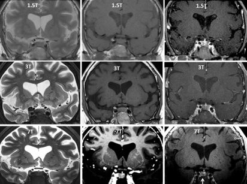
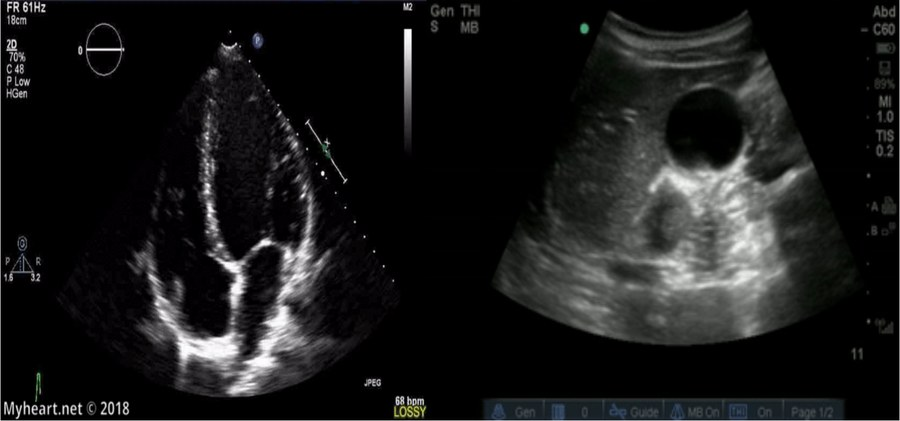
2.3 · Objective c — Which study for which structure
| What you want to see | What the deck says to use |
|---|---|
| Moving structures — heart, vasculature, obstetrics | Ultrasound, which records in real time |
| Female pelvis, and paediatric patients | Ultrasound, often the first study of choice; also for image-guided procedures |
| Soft tissue — essentially anything other than bone | Magnetic resonance, with extremely high anatomical detail |
| Brain, and the soft tissues of orthopaedics — muscle, ligament, tendon | Magnetic resonance; it is the cornerstone of neuroimaging |
| Tissue surrounded by bone | Magnetic resonance — calcium emits no signal, so the bone does not obscure it |
| Anything cross-sectional | Computed tomography, the foundation of cross-sectional imaging |
| Pleural effusion | Chest radiograph in the decubitus position, so the fluid layers out |
| Genitourinary tract | Kidney-ureter-bladder film — supine, anterior-posterior |
| Gastrointestinal tract, free air, air-fluid levels | Abdominal series — standing, anterior-posterior; for obstruction, perforation, volvulus |
| Which organs are consuming glucose | Positron emission tomography |
| Where blood is flowing | Single photon emission tomography, or colour Doppler |
2.4 · Objective d — Density, contrast & the Hounsfield scale
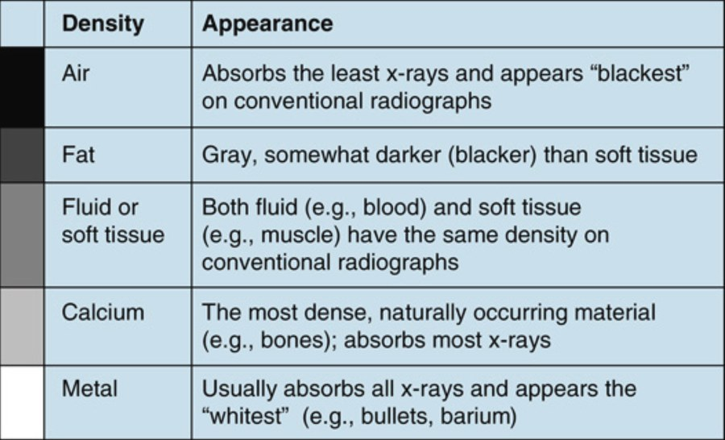
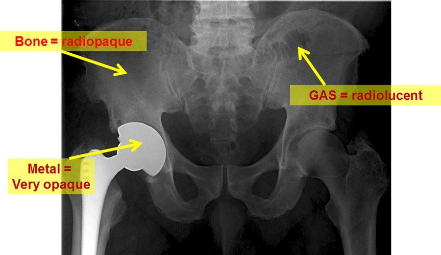
The vocabulary. Radiolucent and hypodense both mean the image looks darker, because more x-ray photons passed through and less was absorbed. Radiopaque, hyperdense and radiodense all mean it looks whiter, because less passed through and more was absorbed. Radiation itself is measured in millisieverts and milligrays.
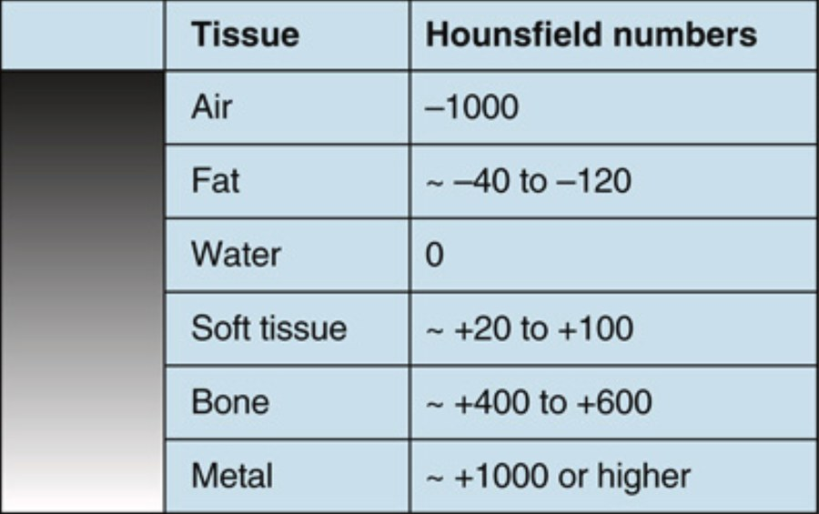
A computed tomography image is a matrix of thousands of tiny squares — pixels — each assigned a number from −1000 to +1000 in Hounsfield units, according to how much of the beam that point absorbed. Water is zero by convention and everything else is placed relative to it.
| Term | On computed tomography | The same substance on a plain film |
|---|---|---|
| Increased attenuation | High Hounsfield number, appears whiter — metal, calcium | Increased density; more opaque, radiopaque |
| Decreased attenuation | Low Hounsfield number, appears blacker — air, fat | Decreased density; increased lucency |
2.5 · Objective e — Positioning & the imaging planes
Projections are named in the direction the beam travels, from what it strikes first to the most distal portion. So posterior-anterior means the beam enters the back and leaves the front.
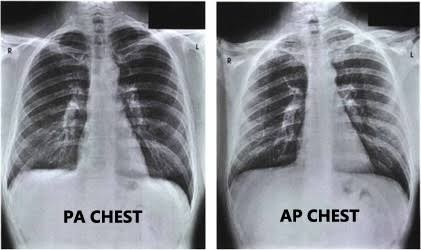
| Position | How | What it is for |
|---|---|---|
| Posterior-anterior | Standing, beam from behind; usually combined with a lateral | The standard chest film |
| Lateral | Side-on; the patient faces to the left on the view | Read together with the posterior-anterior film |
| Lateral decubitus | Lying on one side | Pleural effusion — the fluid levels out with gravity |
| Anterior-posterior | Beam from the front | Used when a patient cannot stand for a posterior-anterior film |
| Kidney-ureter-bladder | Supine, anterior-posterior | Genitourinary tract |
| Abdominal series | Standing, anterior-posterior | Gastrointestinal tract; air-fluid levels, free air, obstruction, perforation, volvulus |
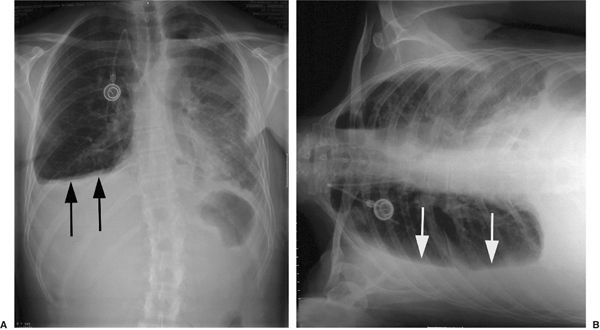
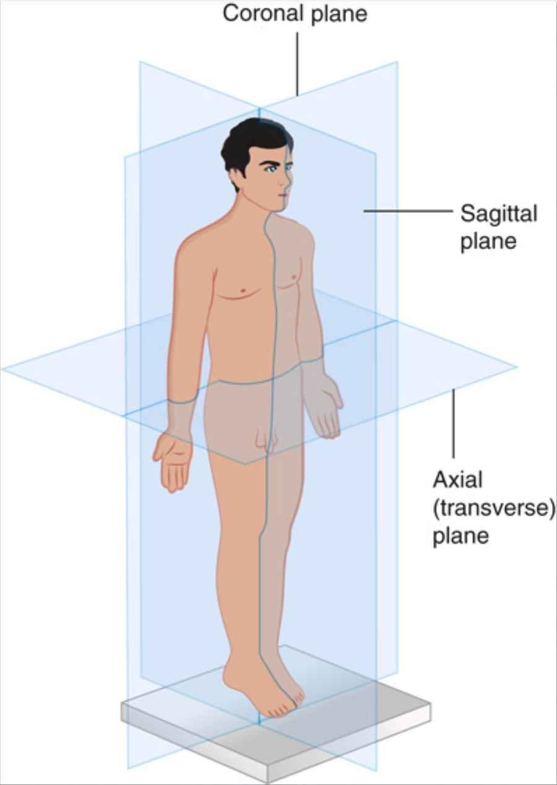
For computed tomography, nuclear medicine and magnetic resonance the patient is supine, and traditional images are transverse sections viewed as if you were looking at the patient's feet — so the patient's left side is on the reader's right. Ultrasound has dozens of positions depending on the structure and the complaint, most of them some variety of supine.
2.6 · Objective f — Risks & benefits of radiation exposure
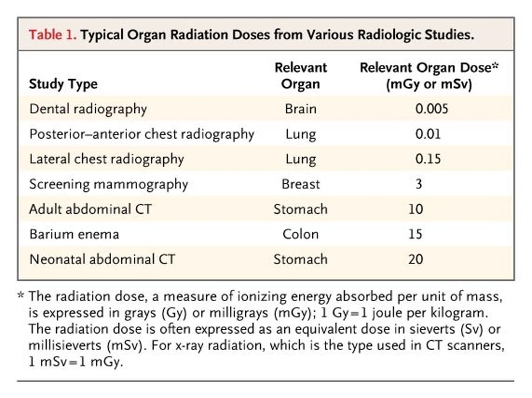
Dose is ionizing energy absorbed per unit of mass, expressed in grays or milligrays — one gray is one joule per kilogram — and often as an equivalent dose in sieverts or millisieverts. For the x-ray radiation used in computed tomography scanners, one millisievert equals one milligray, which is why the table above can label a single column with either.
Nuclear medicine is different in kind, not just in amount. In every other modality the machine is the source and the exposure stops when the study stops. In nuclear medicine the tracer is inside the patient, so for a while the patient is the source — they can briefly expose other people. That is the one radiation fact unique to these studies.
2.7 · Objectives g & h — Contrast media, contraindications & safety
Contrast is used most often to image arteries or veins, and to delineate and characterise masses — neoplastic against benign, infectious abscess against cyst. It also shows inflammation, increased blood flow and increased cellular or metabolic activity, and outlines luminal structures when given by mouth or as an enema. It can be injected into joints (arthrogram), into the central nervous system (intrathecal) and into the bladder (retrograde pyelogram). Because the dyes are technically radioactive, the deck names cancer as a risk factor for all contrast material.
| Study | Agent | Before you give it | Watch for |
|---|---|---|---|
| Computed tomography, intravenous | Omnipaque (iohexol) — a radioactive form of iodine | Check blood urea nitrogen and creatinine; give one litre of normal saline to protect the kidneys | Nephrotoxicity. Indicated for inflammation, cancer staging, tumour delineation, vasculopathy, emboli, thrombi, stenosis, aneurysm |
| Angiography | Iohexol arterially, lower concentration than for intravenous computed tomography; iso-osmolal iodixanol (Visipaque) believed safer | Same renal checks | Same iodinated risks |
| Computed tomography, oral | Barium, or Gastrografin | Barium is contraindicated if perforation is suspected — use Gastrografin | Barium is toxic to extra-intestinal tissue and causes alkaline burns. Unpleasant taste |
| Fluoroscopy swallow study | Oral barium, with sequential films | Same perforation caveat | Same |
| Magnetic resonance | Gadolinium | Assess blood urea nitrogen and creatinine regardless — renal function matters mainly for clearance | Can damage kidneys, but not as harmful as computed tomography contrast. For central nervous system tumours, metastases, soft tissue masses, arthrograms. Magnetic resonance angiography and venography need no contrast |
| Positron emission tomography | Fluorodeoxyglucose-18 | Nothing specific | No contraindications, not known to be nephrotoxic; may cause hyperglycaemia; renally cleared, so the genitourinary tract is always contrast positive |
| Single photon emission tomography | Technetium-99 | Nothing specific | Allergic reactions rare, no organ damage documented. Bone scans, myocardial perfusion, functional brain imaging, immunoscintigraphy, sentinel node identification, white cell uptake |
2.8 · Objective i — Working with the radiology team
- The radiologist has not seen the patient. Whatever you give them is what guides the read, so give as much relevant clinical information as you can.
- A vague report is a conversation, not a dead end. Contact the radiologist and discuss the patient.
- If you do not know which study to order, say what you are looking for. They can guide the choice; that is what the relationship is for.
- Imaging several regions may mean several orders — magnetic resonance of brain, cervical spine, thoracic spine and lumbar spine is four requests, not one.
3 · Diagnostic Testing for Dermatologic, Ophthalmologic and ENT Disorders
Instructional Objectives
Topic Outline 3: Diagnostic Testing for Dermatologic, Ophthalmologic, and ENT Disorders
- Discuss indications, advantages, and limitations of common diagnostic tests used in dermatologic disorders.
- Describe indications for skin cultures and wound cultures.
- Interpret potassium hydroxide (KOH) preparations.
- Discuss indications for skin biopsy and common biopsy techniques.
- Discuss the role of diagnostic testing in evaluation of soft tissue infections and abscesses.
- Describe indications and interpretation of: i. Visual acuity testing · ii. Fluorescein examination · iii. Tonometry · iv. Visual field testing
- Discuss indications for: i. Rapid streptococcal testing · ii. Throat cultures · iii. Audiometry · iv. Tympanometry
- Compare and contrast CT and MRI applications in head and neck pathology.
- Select appropriate imaging studies for common ophthalmologic and ENT disorders.
- Identify common abnormalities of the orbit, sinuses, and neck on diagnostic imaging.
- Discuss imaging evaluation of neck masses and deep neck infections.
- Apply diagnostic test selection principles to common dermatologic, ophthalmologic, and otolaryngologic presentations.
The one thing she said outright she would NOT ask. At 1:00:43, on the animal hearing-range figure: “I’m not going to ask you to be like, what is the range of the killer whale … I’m not gonna ask you about that.” It is there to show how wide human hearing is, nothing more.
The one thing she flagged as important on the slide AND out loud. At 23:44, on the necrotizing infection red flag: “You’ll notice I put it in red and it’s bolded … this is important … We think of skin infections like it’s just a skin infection, put them on some antibiotics. No.” Hypotension plus a white cell count of 15,000 or more plus violaceous skin must be screened for necrotizing infection.
She said the melanoma biopsy rule three times in two minutes (18:24–20:35): “You’re not going to perform a shave biopsy. You’re not going to perform a punch biopsy. You are going to perform an excisional biopsy if melanoma is on your differential list as a reasonable concern.” And the reason it matters: “If it is melanoma you will be happy and they will be happy that you’ve done a larger, wider excision.”
Two live additions that are not on any slide. On the potassium hydroxide preparation (13:05): some people pass a flame under the slide a couple of times to help destroy the scale, heating it without boiling it — and if char forms underneath, an alcohol pad cleans it off so the microscope view stays clear. On sampling technique (18:44): the technique itself determines how easily the specimen can be evaluated — a punch that misses an edge produces a sample the pathologist cannot grade.
Visual field localisation is deferred. At the visual pathway slide she said the detail is coming “on Thursday”. The four patterns in 3.4 below are still fair game.
3.1 · Objective a — Ask the question first
Most skin disease is diagnosed by history and visual inspection, with office testing added only for uncertain diagnoses. Every test should answer a specific clinical question, and four factors govern which one you pick: cost, availability, invasiveness and diagnostic yield.
| The question | The test |
|---|---|
| Is this an infection? | Potassium hydroxide preparation, or culture |
| Is this a neoplasm, or a rash that will not resolve? | Biopsy |
| Is this an abscess or is it cellulitis? | Point-of-care ultrasound |
In the lecture she put it as “anytime you’re worried about anything that’s a malignancy, tissue is the issue — you need to figure out what the cell line is.” The closing rule of the whole lecture: always choose the least invasive test that answers the clinical question.
3.2 · Objectives a & c — Bedside microscopy and the potassium hydroxide preparation
The three bedside tests are potassium hydroxide, Tzanck and Gram stain. All three are quick, inexpensive, and both sensitive and specific; both limitations are human — operator skill and sampling technique.
| Finding on potassium hydroxide | Means |
|---|---|
| No fungal elements seen | Negative |
| Branching, septate hyphae | Dermatophyte |
| Pseudohyphae WITH budding yeast | Candida |
| “Spaghetti and meatballs” | Tinea versicolor |
Indications: tinea corporis, pedis or cruris; onychomycosis; cutaneous candidiasis; intertrigo. Procedure: scrape with a small scalpel blade onto a glass slide, add one drop of 20% potassium hydroxide, lower the cover glass to exclude bubbles, blot the excess with gauze, then survey at 10× with the condenser lowered to reduce illumination so epithelial cells become visible, and examine anything suspicious at 40×.
Sensitivity depends on adequate scraping, and a clinical-only diagnosis can misidentify a fungal infection — which is the argument for doing the test at all.
3.3 · Objectives d & e — Biopsy, the melanoma rule, and soft tissue infection
| Technique | What it gives, and when |
|---|---|
| Shave | Raised epidermal lesions; basal and squamous cell carcinoma; superficial rashes |
| Punch | Full-thickness sample; inflammatory rashes and small lesions |
| Excisional | Removes the entire lesion — preferred for suspected melanoma |
The melanoma rule. A narrow excisional biopsy with 1–3 mm margins, taken to a depth that avoids transecting the base so Breslow depth can be measured. Acceptable excisional methods are fusiform or elliptical, punch, and deep shave or saucerization — all must go below the lesion. A partial or superficial shave is acceptable only when suspicion is low, and it may underestimate Breslow depth; facial, acral and very large lesions are named here too.
Do not confuse these millimetres with the centimetres in CMS I Lecture 9. 1–3 mm is the DIAGNOSTIC biopsy margin that establishes Breslow depth; 0.5–2 cm is the definitive RE-EXCISION margin that follows once the depth is known.
| T category | Breslow depth |
|---|---|
| Tis | Melanoma in situ |
| T1 | 1 mm or less |
| T2 | More than 1 and up to 2 mm |
| T3 | More than 2 and up to 4 mm |
| T4 | More than 4 mm |
Soft tissue infection. Point-of-care ultrasound reliably separates the two: cellulitis shows dermal thickening, increased echogenicity and cobblestoning (which the deck footnotes as non-specific, since venous stasis does it too); an abscess shows a hypoechoic or heterogeneous collection, possibly with debris or septations, and posterior acoustic enhancement. Computed tomography and magnetic resonance are reserved for deep-space infection, necrotizing infection, foreign body and gas, and contrast magnetic resonance best defines the extent of tissue damage.
3.4 · Objective b — Skin and wound cultures
Culture purulent lesions, sampling pus from abscesses, carbuncles and furuncles. Empiric treatment without culture is reasonable in typically presenting, uncomplicated cases. Do not culture an inflamed epidermoid cyst. Consider culturing a non-healing or chronic wound when the patient is immunocompromised, when methicillin-resistant Staphylococcus aureus is suspected, or after treatment failure.
The Levine method. Clean the wound with sterile water or saline, NOT an antimicrobial solution. Identify 1 to 2 cm of clean wound tissue. Rotate the applicator for five seconds with enough pressure to express fluid from the tissue. Do not sample exudate, eschar or necrotic material.
Culture buys you organism identification plus susceptibilities. Its limits: superficial swabs are prone to contamination and colonisation and may not correlate with deep infection, so in complex wounds — diabetic foot ulcers, pressure ulcers — a deeper tissue biopsy or aspirate gives higher yield.
3.5 · Objective f — The four ophthalmic tests
The examination runs on VVEEPP: visual acuity, visual fields, external exam, extraocular movements, pupils, pressure.
| Test | Indication | Reading it |
|---|---|---|
| Visual acuity | EVERY eye complaint | Snellen for distance, Rosenbaum for near. Test best-corrected acuity; use a pinhole if reduced. Corrects with pinhole → refractive. Does not correct or worsens → eye pathology. Unilateral loss → optic nerve or ocular; bilateral → systemic or intracranial |
| Visual fields | Assessing the visual pathway | Confrontation at the bedside; formal perimetry or Amsler grid by ophthalmology. Central scotoma → macula or optic nerve. Peripheral loss → glaucoma. Bitemporal hemianopia → chiasmal, think pituitary. Homonymous hemianopia → retrochiasmal, query stroke |
| Fluorescein | Eye pain, foreign-body sensation, trauma, contact-lens wear, red eye | Cobalt-blue light, after a topical anesthetic. Linear → abrasion. Branching or dendritic → herpetic keratitis. Fixed dense staining or opacity → ulcer, urgent referral |
| Tonometry | Glaucoma; acute angle-closure is an ophthalmologic emergency | Normal pressure 10–21 mm Hg. Pressure alone is insufficient — most open-angle glaucoma has normal pressure, and readings vary with corneal thickness |
Optic disc cupping. Normal cup-to-disc ratio is about 0.3; glaucomatous injury gives greater than 0.7. The healthy disc has a small central cup with a robust neuroretinal rim; the glaucomatous disc is enlarged, deeply excavated, with an undermined rim and lamina cribrosa collapse. Excavated, not merely pale, is what distinguishes glaucoma from other optic atrophies.
Ocular hypertension versus glaucoma: raised pressure with no optic damage and normal fields is ocular hypertension, a risk factor. Add optic nerve damage and it is glaucoma.
3.6 · Objective g — Throat, hearing and the middle ear
| Rapid streptococcal antigen test | Throat culture | |
|---|---|---|
| Indication | Suspected group A streptococcal pharyngitis with supportive clinical features | Confirming a negative rapid test in children; persistent or severe symptoms |
| Advantage | Fast, point-of-care | Gold standard — highest sensitivity |
| Limitation | Sensitivity only 70–90%, so false negatives | Delayed 24–48 hours |
A negative rapid test in a child should be confirmed by culture; this is not routinely required in adults. And do NOT use antistreptococcal antibody titres to diagnose acute pharyngitis.
Audiometry quantifies the degree and type of hearing loss — conductive versus sensorineural — after abnormal examination findings. Indications: suspected or confirmed loss, persistent otitis media with effusion, and asymmetric loss, to screen for retrocochlear pathology. An air–bone gap of 10 dB or more correlates with middle-ear fluid; a primary-care fail is more than 20 dB hearing level at one or more frequencies.
Screening presents tones at the upper limits of normal hearing — 25–30 dB for adults, 15–20 dB for children. A threshold search finds the softest sound heard at each frequency 50% of the time. On the audiogram, intensity is on the vertical axis, right ear is a red circle and left ear a blue cross. Bone conduction uses a device vibrating through the forehead or mastoid. In the lecture she added the clinical shape of it: we lose the high frequencies first, which is the pattern of presbycusis and sensorineural loss.
Tympanometry varies air pressure in the external canal while measuring reflected energy from a tone — the less compliant the system, the greater the intensity reflected back. Pressure runs along the horizontal axis and compliance the vertical, with a normal peak at 50 mm H2O.
| Type | Meaning |
|---|---|
| A | Normal middle ear function — and also typical of sensorineural loss with a normal middle ear |
| B (flat) | Restricted mobility. Flat + HIGH canal volume → perforation or patent tube. Flat + NORMAL volume → middle-ear effusion. |
| C | Significant negative middle-ear pressure — eustachian tube dysfunction. Significant for treatment below −200 mm H2O |
| AS | Normal pressure, reduced mobility — S for stiff or shallow. Ossicular chain fixation, tympanosclerosis |
| AD | Normal pressure, hypermobility — flaccid membrane from disarticulation |
3.7 · Objectives h–l — Head and neck imaging, and putting it together
| Computed tomography (with contrast) | Magnetic resonance imaging |
|---|---|
| First-line for most acute head and neck infections. Fast, widely available; shows abscess, oedema, gas, bone erosion. Strengths: calcification and bone, sinuses, acute trauma and orbital fractures, foreign bodies, and the unstable or claustrophobic patient. Think CT for bone, trauma and speed. |
Superior soft-tissue contrast, no ionizing radiation. Strengths: intracranial or orbital extension, perineural spread, skull base, tumours. Think MRI for soft tissue, nerves, and tumour or intracranial extension. |
| Presentation | Study |
|---|---|
| Uncomplicated acute rhinosinusitis, otitis, simple soft-tissue infection | No imaging |
| Facial swelling, proptosis, eye signs or neuro signs; complicated sinusitis or orbital cellulitis | Emergency contrast CT of sinuses and orbits |
| Deep neck infection | Contrast CT neck — ultrasound is not helpful here |
| Neck mass | Ultrasound first — superficial or cystic versus solid, size, vascularity |
| Deep or malignant lesions | CT or MRI for staging |
| Acoustic neuroma, asymmetric sensorineural loss | MRI with contrast |
| CT sinus | CT orbit | CT neck |
|---|---|---|
| Mucosal thickening Air-fluid levels Sinus opacification |
Orbital cellulitis with fat stranding Abscess Blowout fracture Herniated orbital contents |
Abscess as a rim-enhancing fluid collection Enlarged or necrotic lymph nodes |
Blow-out fracture: air in the orbit (orbital emphysema), a fracture of the orbital floor, and soft tissue extending down into the top of the maxillary sinus. Tripod fracture: diastasis of the frontozygomatic suture, a fracture of the orbital floor with orbital emphysema, and a fracture through the lateral wall of the maxillary sinus, which fills with blood.
Deep neck infection. Contrast CT of the neck asks three questions: is there a drainable abscess, is the airway compromised, and is it spreading towards the mediastinum. Magnetic resonance adds value for intracranial extension, vascular thrombosis (Lemierre) and osteomyelitis. Her framing in the lecture, off her own peritonsillar abscess story: “if you were worried about a deep neck infection, you want to know about abscess, you want to know about airway, and you want to know about spread.”
The four questions to ask about any test: what does it evaluate well, when do we order it, what are its strengths and limitations, and how do the results confirm the condition. She added a fifth in the lecture: “what is our next step if it doesn’t tell us?” — and only then do cost, availability and urgency enter.
4 · Complete Blood Count and Hematology Diagnostics
Instructional Objectives
Topic Outline 4: Complete Blood Count and Hematology Diagnostics
- Explain the components of a complete blood count.
- Explain the difference between hemoglobin and hematocrit.
- Discuss red blood cell indices.
- Calculate absolute white blood cell counts.
- Discuss the clinical significance of abnormalities in: i. Red blood cells · ii. White blood cells · iii. Platelets
- Discuss indications for ordering a complete blood count.
- Compare and contrast laboratory patterns associated with: i. Microcytic anemia · ii. Normocytic anemia · iii. Macrocytic anemia
- Compare and contrast laboratory tests used in the evaluation of anemia
This deck gives three of its reference ranges two different ways. The full reference table (a picture, on slides 7 and 31) does not agree with the individual teaching slides:
| Reference table (slides 7, 31) | Teaching slide | |
|---|---|---|
| Lymphocytes | 25–33% | 24–44% (slide 26) |
| Platelets | 150,000–400,000 | 150,000–450,000 (slide 30) |
| Red cell distribution width | 11–15% | 12–15% (slide 56) |
A fourth set appears on the labelled smear on slide 15 (neutrophil 60–70%, lymphocyte 20–25%, monocyte 3–8%, eosinophil 2–4%, basophil 0.5–1%), which is a borrowed textbook graphic and matches neither. No quiz question is built on a disputed value. Everything else — white cells, hemoglobin, hematocrit, all four indices, mean platelet volume, neutrophils, eosinophils, monocytes — agrees across both and is fair game.
The worked example on slide 21 is mis-bracketed. It prints ANC = 6,000 × (40 + 5/100) = 2,700. That bracketing evaluates to 240,300. The printed answer of 2,700 is correct and matches the formula image on slide 20, so it is a typographical slip rather than a teaching error. Use ANC = WBC × (%neutrophils + %bands) ÷ 100.
4.1 · Objectives a & f — What is on the panel, and which one to order
A complete blood count reports on the hematologic system and other organ systems. It contains the red cell count, hemoglobin, hematocrit, blood smear, platelet count and mean platelet volume; the four red cell indices (mean corpuscular volume, mean corpuscular hemoglobin, mean corpuscular hemoglobin concentration, red cell distribution width); and the white cell count with differential.
| Without differential | With differential |
|---|---|
| Red cell count · red cell indices · total white cell count · platelets Order it to screen or monitor for anemia, overall leukocytosis or leukopenia, or thrombocytopenia |
Everything above plus neutrophils, lymphocytes, monocytes, eosinophils, basophils Order it when the specific white cell line matters — bacterial infection (neutrophils), viral (lymphocytes), allergy or parasites (eosinophils), hematologic malignancy, autoimmune or inflammatory disease |
The deck's warning is practical: know which one you are clicking, because the two give different values.
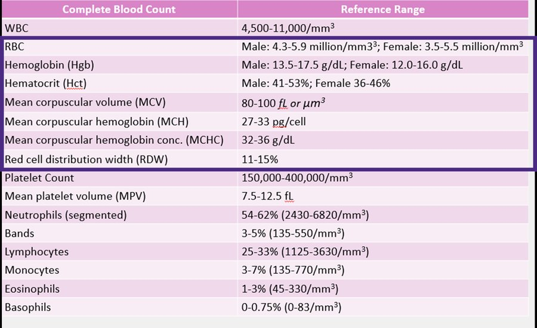
4.2 · Objective e(ii) — The white cell lines
Normal white cell count is 4,500–11,000 cells/µL. Below is leukopenia, above is leukocytosis. White cells fight infection, migrate to injury by chemotaxis, phagocytose foreign organisms, and produce and distribute antibodies.
| Line | Normal | Appearance | Raised by | Lowered by |
|---|---|---|---|---|
| Neutrophil most abundant | 54–62% | 3–4 lobed nucleus, granular cytoplasm | Bacterial infection, myocardial infarction, burns, steroids, rheumatoid arthritis, pregnancy/labor/surgery | Marrow damage, folate and B12 deficiency, radiation, toxic chemicals (benzene), overwhelming infection, viral infection |
| Bands immature neutrophils | ≤5% | 1–2 lobes separated by a thick chromatin band | Neutrophils + bands = bacterial infection. A left shift is an increase in immature cells — neutrophils are consumed faster than the marrow can mature replacements | |
| Eosinophil | 1–3% | Two-lobed nucleus, granules with histamines | Parasitic infection, allergy, cancer | Marrow suppression |
| Basophil | <1% | Usually two-lobed, granules with heparin, histamine, inflammatory mediators | Allergy, cancer | Marrow suppression |
| Monocyte largest | 3–7% | No granules; kidney-shaped nucleus | Chronic inflammation, stress, viral infection | Marrow injury |
| Lymphocyte | see the warning box | Small, mononuclear, no granules | Viral infection | Human immunodeficiency virus, marrow suppression |
Steroids raise the neutrophil count by demargination — the deck spells out the mechanism: they cause neutrophils to detach from the blood vessel wall and enter the main bloodstream. And folate and B12 lower it because both are needed for the marrow to function.
Granulocytes (neutrophil, eosinophil, basophil) have distinctive cytoplasmic granules holding enzymes, proteins and toxic substances. Agranulocytes (monocyte, lymphocyte) have none, and a non-lobular nucleus. Monocytes differentiate into macrophages or dendritic cells — Kupffer cells in the liver, alveolar macrophages in the lung, Langerhans cells in the skin. Lymphocytes are T cells, B cells and natural killer cells, and the complete blood count does not tell them apart.
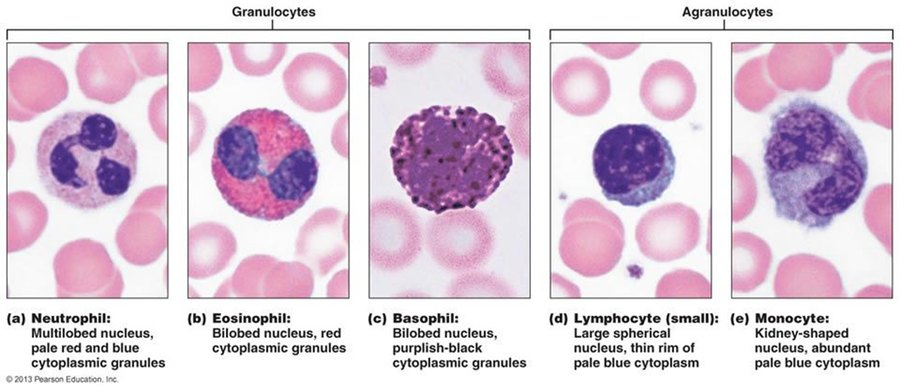
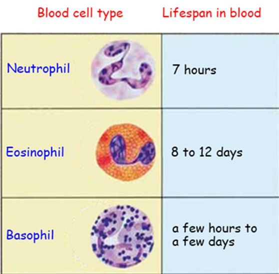
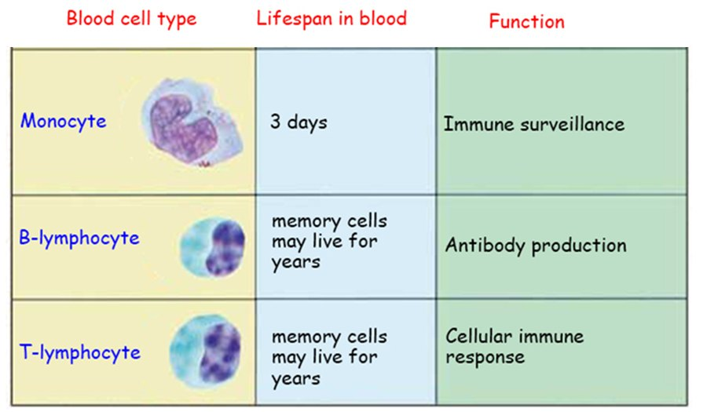
4.3 · Objective d — Absolute counts, and grading neutropenia
A percentage means nothing without the total. The general form is absolute count = total white cell count × that type's percentage ÷ 100, and it works for every line. For neutrophils there is one twist: bands count WITH the neutrophils.
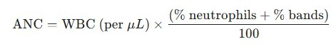
Worked example (the deck's own): a white cell count of 6,000/µL with 40% neutrophils and 5% bands gives 6,000 × (40 + 5) ÷ 100 = 2,700/µL. When the count is written in thousands, the equivalent form is 10 × WBC(thousands) × (%neutrophils + %bands).
The number only means something once you can place it in a band — which is what the next figure is for, and it is nowhere in the slide text.
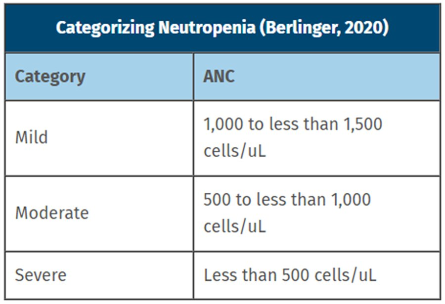
4.4 · Objective e(iii) — Platelets
Platelets form in the bone marrow from megakaryocytes, which break into fragments — so they are not really cells. Lifespan 7–10 days. Primary role is hemostasis, defined by the deck as stopping the bleeding and repairing damaged vessels; they also contribute to coagulation, vascular integrity, inflammation, immune defense, wound healing and thrombosis.
| Raised by | Lowered by | |
|---|---|---|
| Platelet count | Trauma, acute hemorrhage, iron deficiency, polycythemia vera | Marrow suppression — chemotherapy, alcohol, radiation, aplastic anemia, drugs |
| Mean platelet volume 7.5–12.5 fL |
An increase in immature platelets, as after recent blood loss | Bone marrow failure |
Risk of hemorrhage increases below 20,000. Note the oddity worth holding: iron deficiency raises platelets while lowering red cells.
4.5 · Objectives b & c — Hemoglobin, hematocrit and the four indices
Hemoglobin is the amount of hemoglobin in a volume of blood. Hematocrit is the percentage of that blood which is red cells — packed cell volume. The rule of thumb: hemoglobin × 3 = hematocrit.
All three of red cell count, hemoglobin and hematocrit are raised by the same three things — polycythemia vera, chronic hypoxia (chronic obstructive pulmonary disease, sleep apnea, high altitude) and dehydration — and lowered by blood loss, nutritional deficiency, marrow disorders, chronic kidney disease, cancer and dilution. Hematocrit adds smoking and hypoventilation to the raised list, and hemolysis to the lowered one.
The deck is careful about one thing: the red cell COUNT does not accurately measure oxygen carrying capacity and is not directly used to diagnose anemia, though it is still used in evaluating it.
| Index | What it is | Normal | Formula |
|---|---|---|---|
| MCV | Average red cell volume — measured | 80–100 fL | Hct(%) × 10 ÷ RBC (million/µL) |
| MCH | Average hemoglobin in a single cell — calculated | 27–33 pg/cell | Hgb(g/dL) × 10 ÷ RBC (million/µL) |
| MCHC | Average hemoglobin concentration in packed cells — calculated | 32–36 g/dL | Hgb(g/dL) × 100 ÷ Hct(%) |
| RDW | Degree of anisocytosis, the variation in size | see the warning box | — |
MCH and MCHC differ only in their denominator — the red cell count versus the hematocrit — and that is the whole difference between “per cell” and “per volume”. MCHC is the automated screening flag for hereditary spherocytosis and other hyperchromic or dehydrated red cell states.
Hypochromic cells have central pallor greater than one third of the cell diameter (MCH <27, MCHC <32); normochromic is exactly one third; hyperchromic is a deeper red with MCH >33 and MCHC >36, seen in spherocytes.
4.6 · Objective e(i) — Red cell morphology
The deck sorts morphology four ways: size, hemoglobin distribution, shape variation (poikilocytosis) and inclusions with cell distribution. Start with size, because that is also where the anemia algorithm starts.
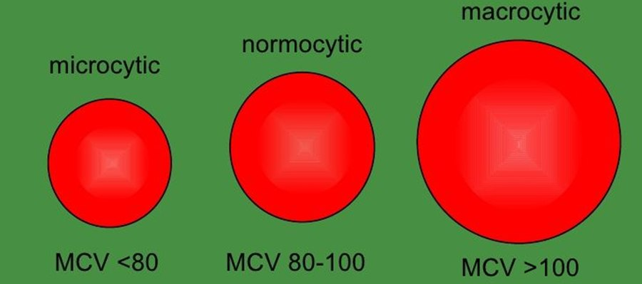
The two spiky cells are the pair people confuse, so learn them against each other.
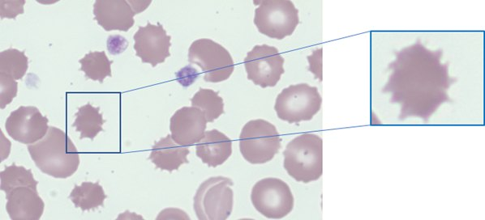
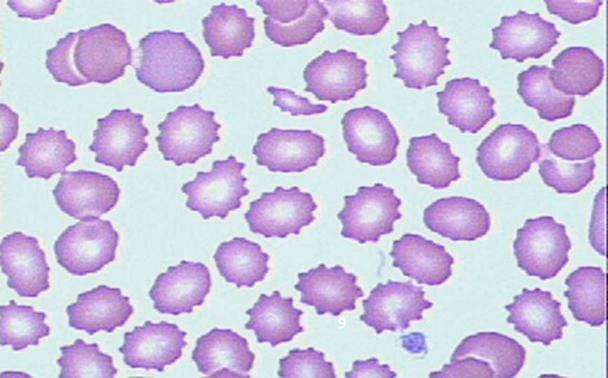
Acanthocyte: irregular spikes, no central pallor, liver disease — from abnormal lipid metabolism or membrane change. Echinocyte: regularly spaced blunter projections right around the cell, central pallor preserved, renal disease.
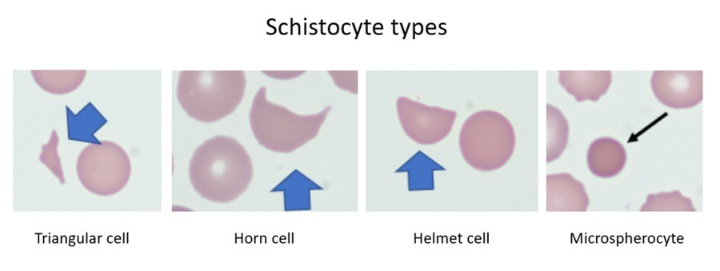
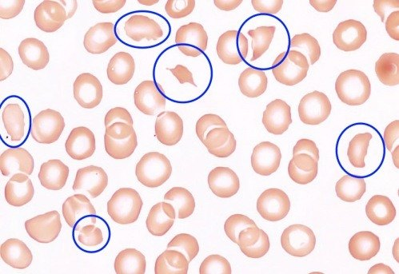
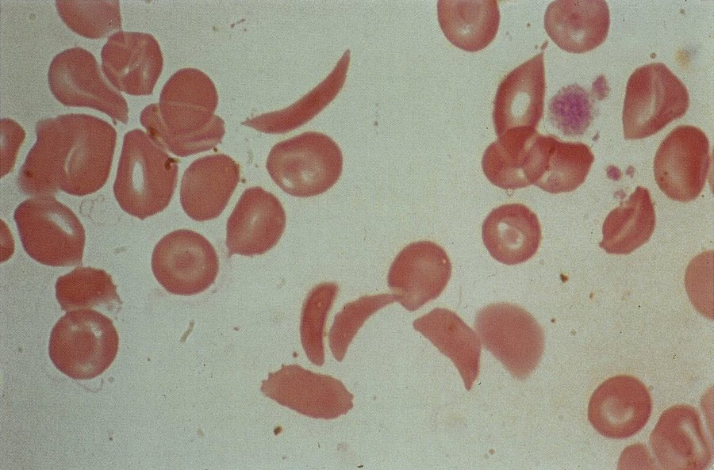
Schistocytes are fragments — helmet, horn, triangular and microspherocyte forms — usually microcytic and lacking central pallor. Hemolysis, mechanical trauma (mechanical heart valves), medications (cyclosporine). Automated counters may count them as platelets, which can make a platelet count look falsely reassuring. Sickled cells (drepanocytes) are thin crescents with no central pallor and dense hemoglobin, formed under low oxygen tension.
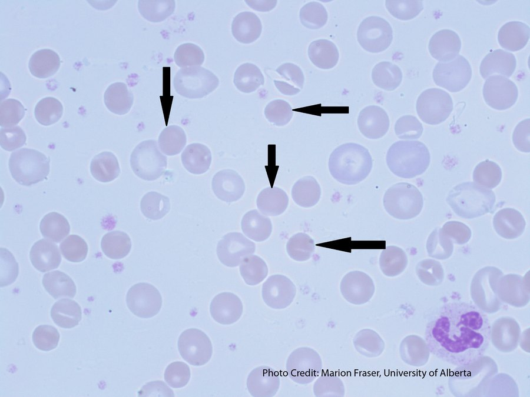
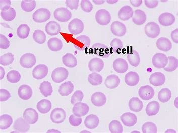
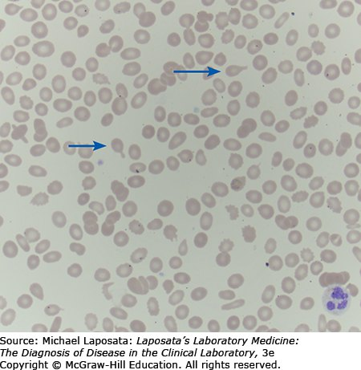
Spherocyte: perfectly round, central pallor lost, often smaller than normal — hereditary spherocytosis. Target cell (codocyte): a dark circle inside the central pallor, from redundant cell membrane — post splenectomy and liver disease. Teardrop cell (dacrocyte): formed in marrow infiltrated by scar tissue or tumour — bone marrow disease.
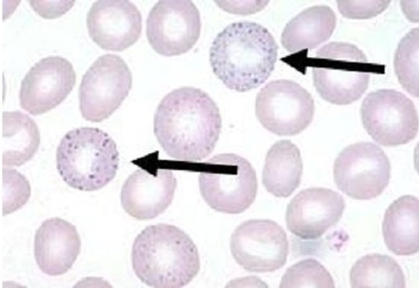
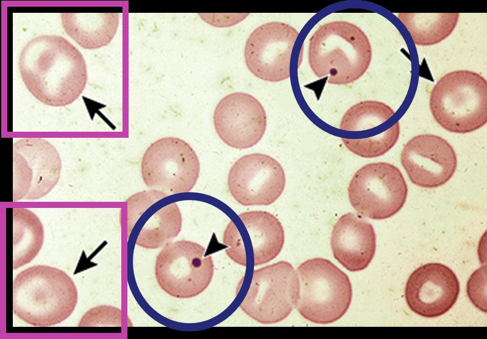
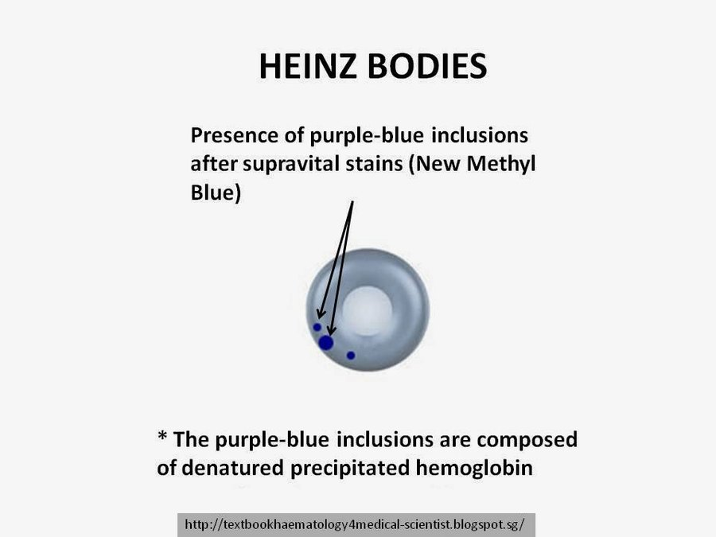
Basophilic stippling is ribosomal RNA in blue-black dots spread evenly through the cytoplasm — lead poisoning. A Howell-Jolly body is a single dark purple residual nuclear fragment; the spleen normally removes them, so finding one means splenic dysfunction or asplenia — which is why target cells turn up in the same field.
Heinz bodies are the easiest thing in this lecture to miss. Denatured hemoglobin at the cell periphery, in G6PD deficiency — and they require a supravital stain (new methylene blue). They are invisible on the routine Wright stain used for the rest of the differential, so nobody will report them unless you ask.
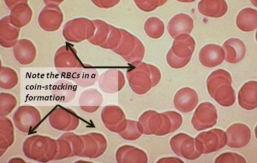
Rouleaux is stacking like rows of coins, because raised serum proteins neutralise the negative surface charge that normally keeps red cells apart — multiple myeloma, liver disease. Agglutination is disorderly clumping from antibodies bridging the cells — transfusion reactions. Different pattern, different mechanism, different diagnosis.
4.7 · Objectives g & h — Working up an anemia
Four steps, and the notes say to do them simultaneously: assess the clinical presentation; check the complete blood count and chemistry panel; determine the mean corpuscular volume; check the reticulocyte count. Look at the peripheral smear if you can get one. A decreased reticulocyte count means underproduction; an increased one suggests hemolysis or blood loss — and the count is most useful when it is very high or very low.
| Microcytic <80 fL | Normocytic 80–100 fL | Macrocytic >100 fL |
|---|---|---|
| Iron deficiency (most common cause of anemia — evaluate for occult blood loss, often the first sign of gastrointestinal bleeding) Lead poisoning Anemia of chronic disease Thalassemia Sideroblastic anemia |
Hypo-proliferative: aplastic anemia, anemia of chronic disease, marrow infiltration by tumor, hypometabolic states Hemolysis or hemorrhage: acute blood loss (hemoglobin and hematocrit start to fall within 2–3 days), intrinsic and extrinsic hemolytic anemia, sickle cell anemia |
Megaloblastic: B12, folate, drugs impairing DNA synthesis (methotrexate, antiretrovirals, hydroxyurea), copper deficiency Non-megaloblastic: alcohol, liver disease, hypothyroidism, reticulocytosis, primary marrow disorders, chronic kidney disease |
Intrinsic hemolysis is a defect in the red cell causing premature splenic removal; extrinsic is mechanical stress, immunologic destruction or inflammatory injury from outside. Macroovalocytes and hypersegmented neutrophils are what mark a macrocytic anemia as megaloblastic; without them, think chronic liver disease or acute hematologic malignancy.
| Pattern | Ferritin | Serum iron | Total iron binding capacity |
|---|---|---|---|
| Iron deficiency | ↓ | ↓ | ↑ |
| Anemia of chronic disease | ↑ | ↓ | ↓ |
| Normal all three | → basophilic stippling? Yes → serum lead. No → thalassemia trait | ||
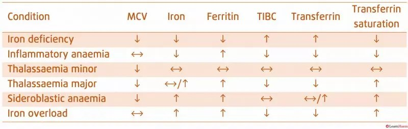
The iron transport analogy on the hand-drawn slide is worth keeping: the bus is transferrin (carries iron), the bus stop is ferritin (stores it, and can be measured because it sits outside the marrow), the home is hemosiderin (storage that cannot be measured), percentage saturation is total iron binding capacity (how many can sit on the bus), and the school is the red blood cell.
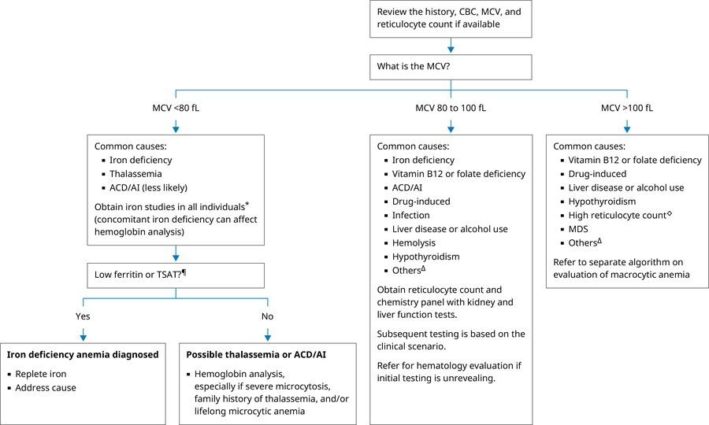
Two things in that algorithm are easy to walk past. Iron deficiency appears in BOTH the microcytic and the normocytic branches, which is why iron studies get obtained even when cell size is normal. And in the microcytic branch you obtain iron studies in all individuals, because a concomitant iron deficiency can affect hemoglobin analysis and hide a thalassemia.
In the normocytic branch, the reticulocyte count splits it three ways: high retics → hemolysis, sickle cell, acute hemorrhage. Low retics with low white cells or platelets → leukemia, metastatic malignancy, aplastic anemia. Low retics with normal or high white cells and platelets → chronic infection or inflammation, malignancy, chronic renal disease, endocrine dysfunction.
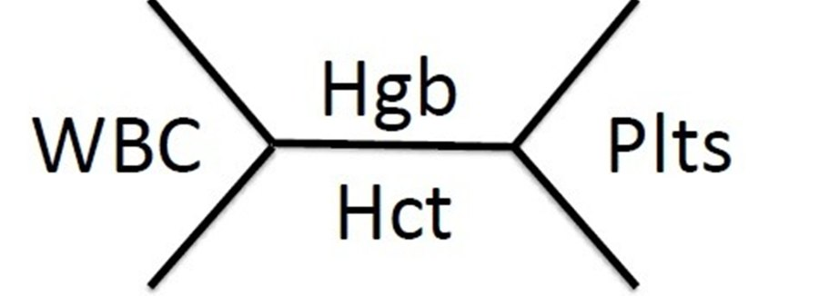